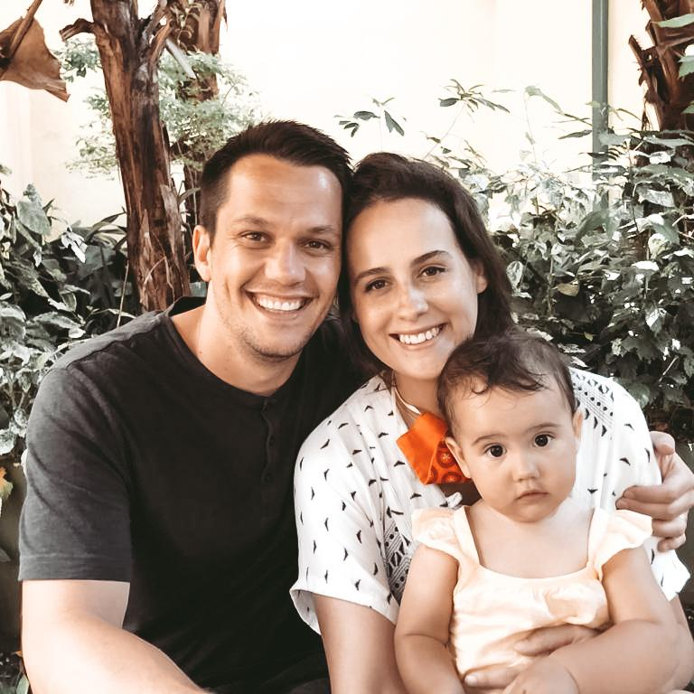
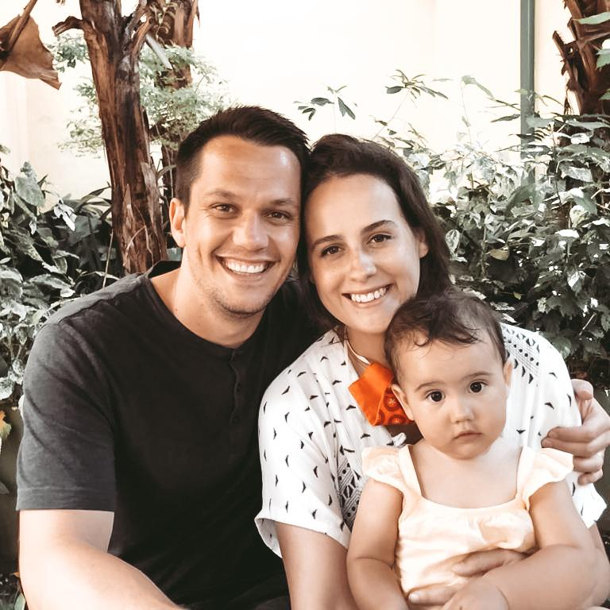

Hello, thank you for stopping by.
My name is Pauli. I’ve been quietly working away as a creative entrepreneur for close to 5 years now. My most recent path has been spatial design and plant styling under the pseudo Sensu.
My life is beautiful, I have a wonderful family, a loving husband, a healthy beautiful daughter yet I often and easily feel sad.
I only recently discovered that slowing down is about learning to lean into the sadness as well as the joy. In my mid 20s I was overwhelmed by anxiety, depression and existential dread. I did as any millennial would do in a moment of crisis- I ran - to India to learn yoga.
India showed me much more than yoga.
I discovered that life is the quiet, meaningful moments in between all the chaos. That small daily rituals like appreciating and enjoying a cup of chai tea amidst the mess can change your outlook on everyday life. It made me realise some of my most “perfect” moments of my life have been the ones that weren’t considered perfect. They were messy and sometimes full of sadness.
I learned that if I refused to be open to experience the fullness of my sadness I’d also miss out on the fullness of my joy. Being mindful allows us to experience and hold the time and space for both. We live in a fast paced world and we need to hustle to survive, But - we do not have to live fast paced lives. Choosing to live an intentional Life gives us a chance to evaluate what is important, make decisions consciously instead of out of habit, and experience the moment we find ourselves in fully. It’s about being intentional with our attention.
I hope you get inspired to hold space for what is important - you.